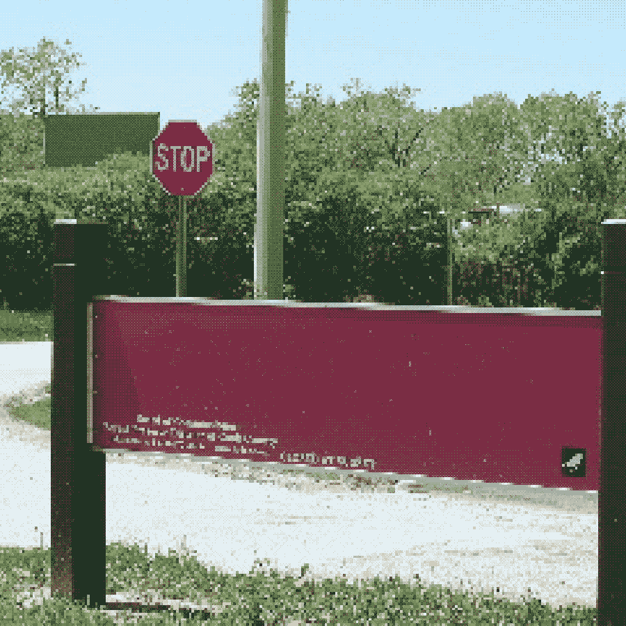
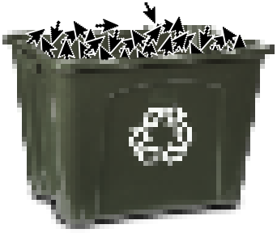

<body>
  

  

  <div class="welcome">
    <a
      class="cursor-shoes hotspot"
      href="./1.html"
      style="display: inline; position:static; color: #2e26c7"
      title="shoes sign|on the corner there's a sign that says: please take your shoes off"
    >
      please leave your shoes
      <br>
      at the door
    </a>

    <br>
    — the parks staff
  </div>

  <button
    id="stop"
    class="hotspot"
    style="left: 25%; top: 23%; width: 8%; height: 5%;"
    title="stop sign|on the background there's a stop sign"
  ></button>

  <a
    class="hotspot"
    href="./55highway_to_the_cosmod.html"
    style="left: 7.188%; top: 17.996%; width: 17%; height: 9%"
    title="highway sign|on the background there's a big highway sign"
  ></a>

  <a
    class="hotspot centered cursor-bird"
    href="https://twitter.com/intent/tweet?text=.@flantz i love to click hyperlinks and play a videogame story — the parks staff &"
    target="_blank"
    rel="noreferrer"
    style="left: 91.188%; top: 73.996%; width: 4%; height: 5%"
    title="bird icon|on the corner of shoe sign there's an icon of what looks like a pixelated bird"
  ></a>

  <a-dumpling
    id="stop-dialog"
    temperament="phlegmatic"
    hidden
    x=37 y=18
    w=16 h=15
  >
    <div class="Dialog">
      <p class="Dialog-text d-internal">
        please look both ways before entering the park. drivers are pretty
        careless around here.
      </p>
    </div>
  </a-dumpling>

  <a-dumpling
    temperament="phlegmatic"
    id="version"
    x=69 y=5
    w=16 h=21
  >
    <iframe src="/misc/version.html"></iframe>
  </a-dumpling>

  <a-dumpling
    id="speedrun"
    temperament="choleric"
    persistent
    hidden
    x=110 y=00
    w=40 h=90
  >
    <iframe src="./items/speedrun.html"></iframe>
  </a-dumpling>
</body>

<script type="module">
  import { kCursor } from "./cursor.js"

  // TODO: I absolutely hate this, but I am tired and I cant figure out another way to make this thing show when coming from another window
  setTimeout(() => {
    const hash = window.location.hash.slice(1)
    if (hash === "gamermode") {
      Frames.toggle("speedrun")
    }
  }, 1000)

  // stop sign
  document.getElementById("stop").addEventListener("click", (evt) => {
    evt.preventDefault()

    // harsh era
    const title = document.querySelector("title")
    title.innerHTML = "don't go!"

    // mellow era
    Frames.toggle("stop-dialog")
  })

  // get or return the cursor
  document.getElementById("pointer-bin").addEventListener("click", kCursor.onToggle)
</script>

<style>
  .welcome {
    color: #D0CDBE;
    position: absolute;
    top: 50%;
    left: 19%;
    font-size: 4.7vmin;
    font-family: trebuchet ms, sans-serif;
    transform: perspective(950px) rotate(3deg) rotateY(-20deg) skew(3deg);
    text-align: right;
    opacity: 90%;
  }

  .Dialog {
    overflow: hidden;
    width: 100%;
    height: 100%;
  }

  .Dialog-text {
    margin: 0;
  }

  a {
    color: #76b2d4;
  }
</style>

<s-cript target="assistant">
  --- click
  When you don't know where to start, go back to the beginning.
  ==> click
</s-cript>